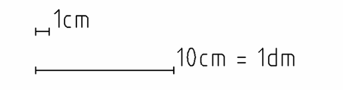
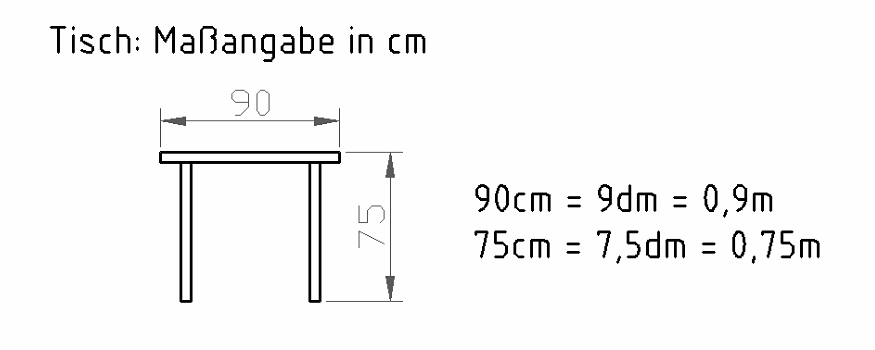
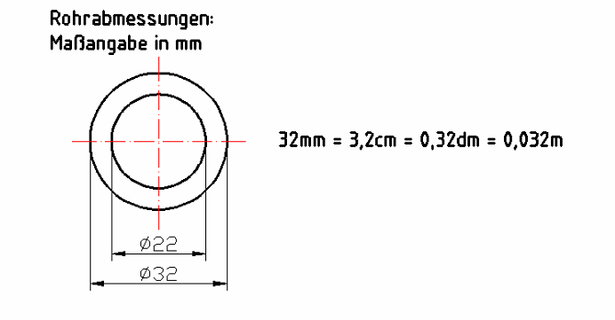
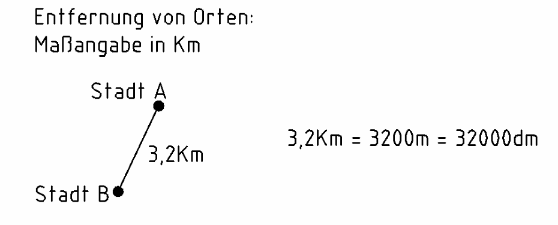

3 Längen umrechnen
Öffnet YouTube. Braucht Internet.
Zuerst die Pflicht-Aufgaben (★, ★★). Die Extra-Aufgaben (★★★) am Ende sind freiwillig.
Tippe in die Kästchen. Dann tippe auf „Prüfen“.
Grün = richtig, Rot = schau noch einmal.
Anwendung: Rohre, Entfernungen, Raumabmessungen
Einheiten: Kilometer (km), Meter (m), Dezimeter (dm), Zentimeter (cm), Millimeter (mm)




Die Einheiten-Treppe
km → m → dm → cm → mm
km → m: · 1000
m → dm, dm → cm, cm → mm: jeweils · 10
In die andere Richtung (z. B. mm → cm): : 10 bzw. : 1000
Beim Mal-10-Rechnen rutscht der Beistrich um eine Stelle nach rechts, beim Geteilt-durch-10 nach links.
Aufgabe 1 ★
Rechne in die anderen Einheiten um. Rechne Zeile für Zeile weiter: von der Zeile darüber eine Stufe.
| 36 mm | |
|---|---|
| = | m |
| = | dm |
| = | cm |
| 1,2 dm | |
|---|---|
| = | m |
| = | cm |
| = | mm |
| 34 cm | |
|---|---|
| = | m |
| = | dm |
| = | mm |
Aufgabe 2 ★
Rechne um.
| 34 cm = | mm |
| 4,6 mm = | cm |
| 48 dm = | cm |
| 120 dm = | m |
| 3400 m = | km |
Aufgabe 3 ★★
Zuerst alles in mm umrechnen. Dann zusammenzählen.
Beispiel: 1 m + 20 cm = 100 cm + 20 cm = 120 cm
128 mm + 19 cm + 12 mm =
mm
Extra: Wenn du noch Zeit hast ★★★
Pflicht geschafft! Du darfst hier aufhören.
Diese Aufgaben sind freiwillig. Hier musst du über mehrere Stufen umrechnen.
Aufgabe 4 ★★★
Rechne in die anderen Einheiten um.
| 5,7 m | |
|---|---|
| = | dm |
| = | cm |
| = | mm |
| = | km |
| 304 cm | |
|---|---|
| = | m |
| = | dm |
| = | mm |
| 708 mm | |
|---|---|
| = | m |
| = | dm |
| = | cm |
| 8400 m | |
|---|---|
| = | dm |
| = | km |
| 56 dm | |
|---|---|
| = | m |
| = | cm |
| = | mm |
Aufgabe 5 ★★★
Rechne um. Achtung: mehrere Stufen!
| 706 mm = | m |
| 560 mm = | dm |
| 5,7 mm = | m |
| 48000 m = | km |
| 13 m = | cm |
Aufgabe 6 ★★★
Zuerst alles in dieselbe Einheit umrechnen. Dann zusammenzählen.
0,02 m + 13 cm + 8 dm + 204 mm =
cm
0,28 km + 56 m + 304 dm =
m
148 cm + 0,92 m + 31 dm =
mm
75 m + 128 cm + 0,02 m + 158 cm =
dm
7014 mm + 312 dm + 8940 cm =
m